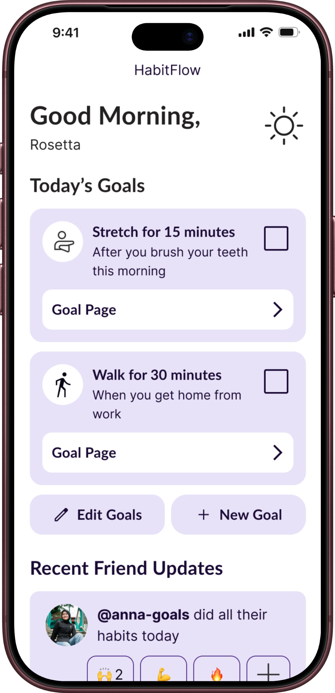
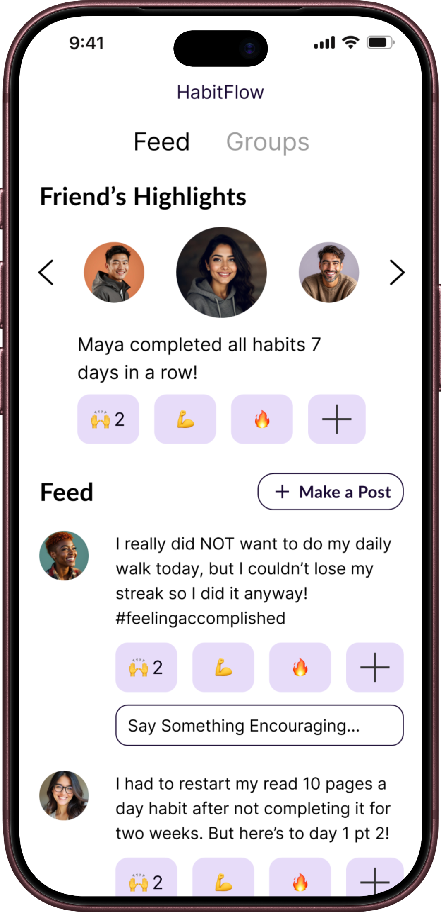
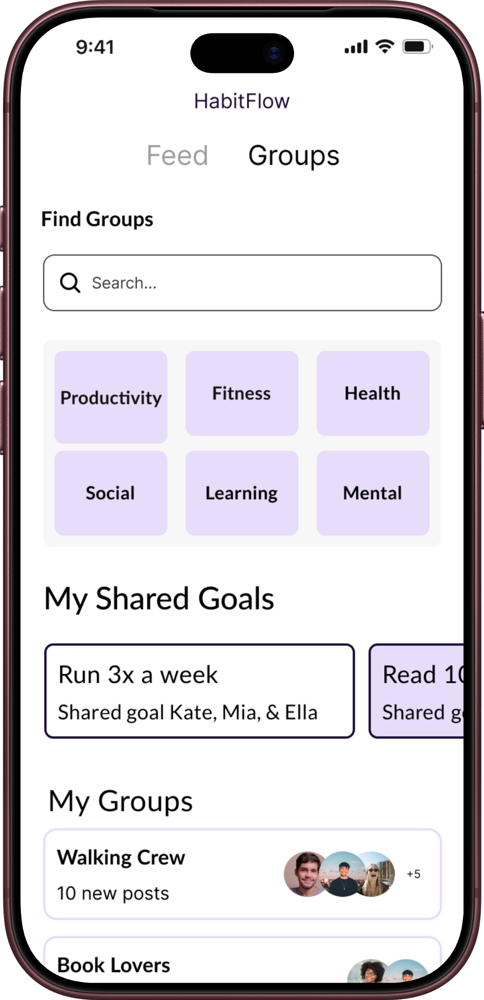
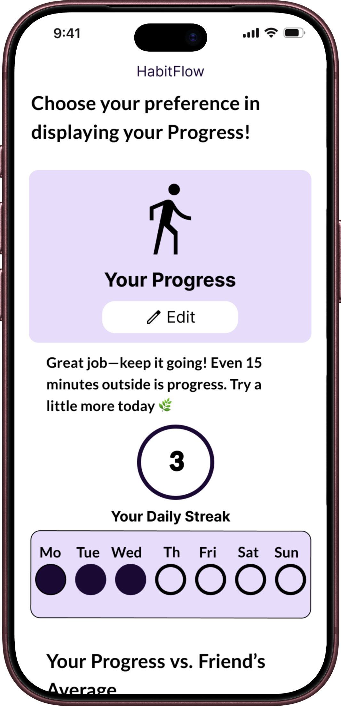
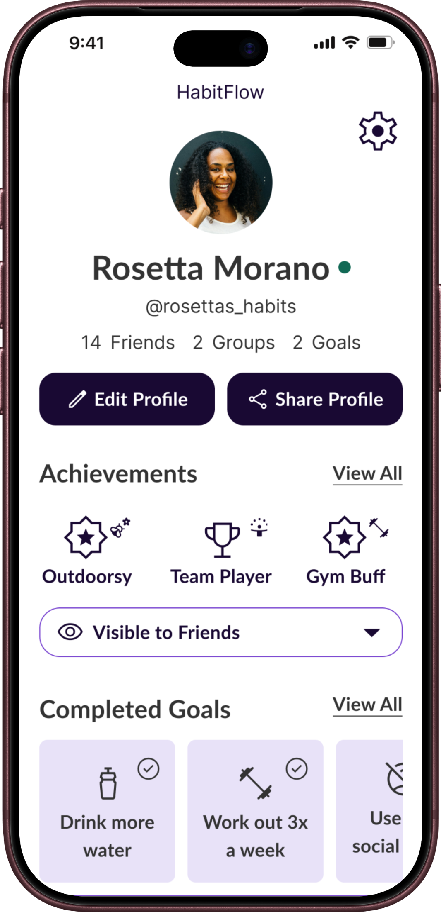

Overview
‘HabitFlow’ is a research-backed habit building and tracking mobile app developed following the full UX Research & Design process.
My Role: UX Researcher & Designer (1 on team of 4)
Timeline: January 2026 - April 2026 (Master’s Program Capstone Project)
Project Quick Stats
20+ Participants | Mixed-Methods — Surveys, Interviews, Usability Testing | 3 UI Iterations
Key Design Decisions/Insights:
- Personalization, Data Driven Metrics, and Community Engagement are crucial when people are building habits.
- Users appreciate insights using AI but do not want another chatbot.
- Reduced navigation errors following Usability Testing.
Tools Used: Figma, Miro, Zoom, Google Sheets, Google Docs, Google Slides
The Problem
There are tons of habit building and tracking apps available on the app store today, so why do users still struggle to find a comprehensive habit building tool that actually works? During our competitive analysis, we uncovered that although many apps exist most of them are exactly the same and nothing more than aesthetic alarm apps. Many apps are too individualistic, isolating users on the journey towards their goals or do not provide real tools and information for helping users build habits and only create annoying repetitive alarms that users learn to swipe away everyday. Users are looking to these apps for more than just another notification.
Research
Research Questions:
- How are habit tracking and/or habit formation apps supporting and/or inhibiting the development of habits among users?
- What practices help users develop and maintain habits when not using habit tracking and/or habit formation apps?
Methods
Our survey screened for working professionals with habit-building experience, then split respondents by app use to compare approaches. App users ranked goal tracking, progress insights, and notifications as most useful, while non-app users prioritized reminders and accountability partners. Across both groups, motivation loss, time constraints, and stress were the top barriers, suggesting that adherence hinges more on managing life demands than on the specific tool or method used. We ran 7 semi-structured interviews (15-30 minutes) with app-using, male participants recruited from survey opt-ins and personal networks — a sample skewed enough to limit diversity but still rich on app-based habit formation. Findings pointed to intrinsic motivators (health, genuine interest) as more sustainable than extrinsic ones (streaks, social influence), with participants valuing personalization and small-step goals while pushing back on apps that fostered over-reliance on tech or unrealistic goal-setting. We ran four usability tests on our mid-fidelity prototype with participants from our personal networks, observing task completion and friction points across core flows. Testing surfaced small touch targets, unclear data labeling, and a need for brevity in text and task flows — plus a navigation mismatch around the original name “AutoHabit,” which users found confusing since goal creation lived on the profile page rather than “automatic.”
Research to Design
Research findings directly shaped HabitFlow’s core architecture: users grow dependent on apps rather than internalizing habits leading our team to deprioritize tracking in favor of features that support long-term behavior change. We found that motivation isn’t universal, some are driven by social accountability, others by data, leading to parallel pathways in the final product: a Community page for social accountability and a Data page for those motivated by metrics. Usability testing findings further closed the loop on execution. Participants expressed confusion over the name “AutoHabit” and its mismatch with goal creation prompting a rename and navigation rework. Additionally, small touch targets and unclear data labeling drove interface refinements in the final iteration.
Design Process
The team structured HabitFlow around an intelligent goal-setting flow that breaks large goals into smaller milestones and identifies where the habit fits into a user’s existing routine, followed by a choice of time-, frequency-, or location-based notifications that gradually decrease over time. A direct response to the literature on app dependency. From there, users are routed into either community groups with shared goals or customizable data visualizations, depending on what motivates them, with a Profile page giving further control over visibility, achievements, and accessibility settings.
Usability Testing & Iterations
The team ran four usability tests on the mid-fidelity prototype, observing task completion and friction points across core flows. Testing surfaced touch targets that were too small, unclear labeling that left users confused about what certain data represented, and a need for greater brevity in text and task flows — particularly when adding new habits or goals. The most significant finding was navigational; the original name, “AutoHabit,” misled users into expecting something more automated, and they didn’t anticipate finding goal creation on the Profile page, revealing a mismatch between the information architecture and user expectations that shaped the final iteration.
Final Design
HabitFlow’s final system became a minimalist goal-building flow that trades tracking-heavy features for long-term behavior change. Goal-setting with milestone breakdown, decreasing notifications, a Community page for social accountability and friendly competition, a Data page for customizable progress visualizations, and a Profile page with adjustable privacy, themes, and accessibility settings.





Reflection
Our team narrowed its focus significantly over the course of the project, moving from an initial Gen X–focused concept spanning three app ideas to a single, research-grounded habit-formation tool. However, key limitations, all usability testing participants were male and drawn from personal networks, introducing bias that likely shaped design decisions in ways not representative of a broader user base. Looking ahead, we identified longitudinal testing as the next step to assess whether reduced app dependency actually produces sustained habit formation over time, alongside expanded testing of social and customization features to evaluate their real-world impact on retention and motivation.